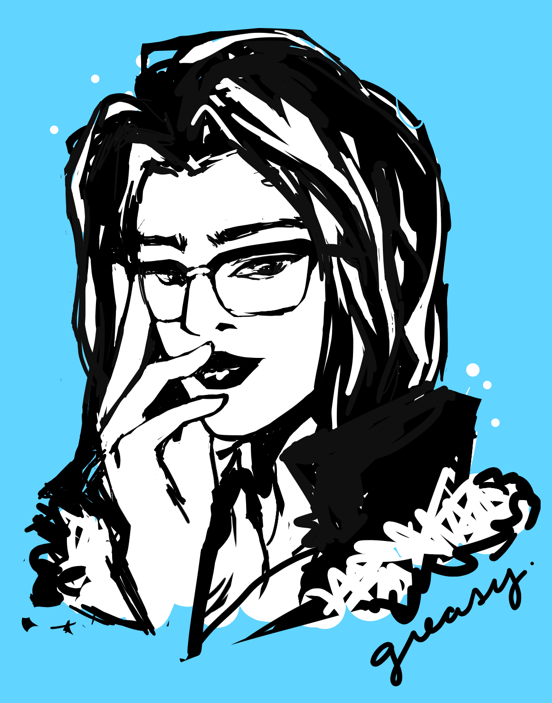
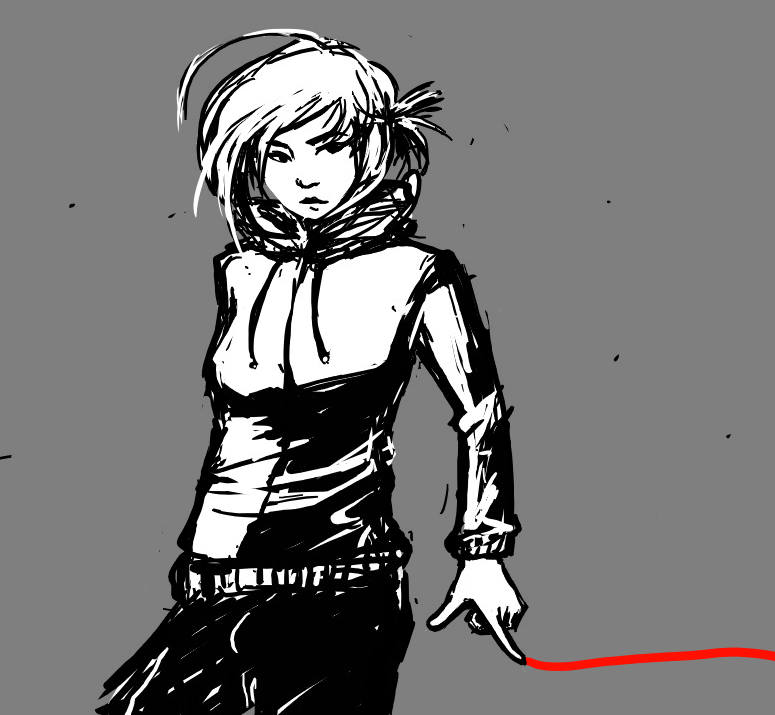
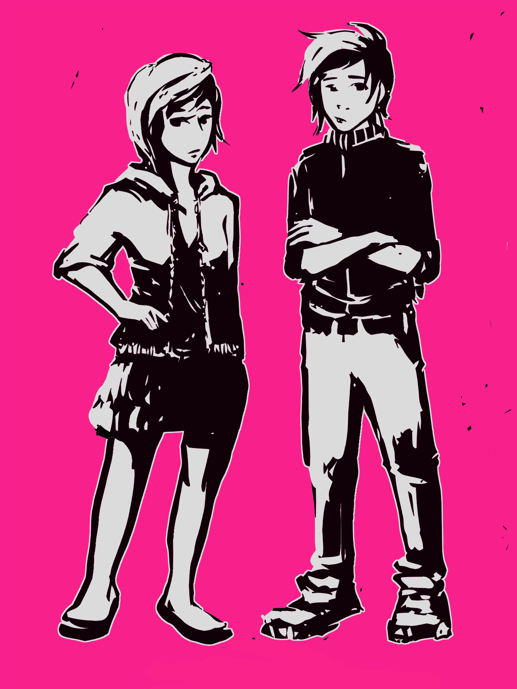
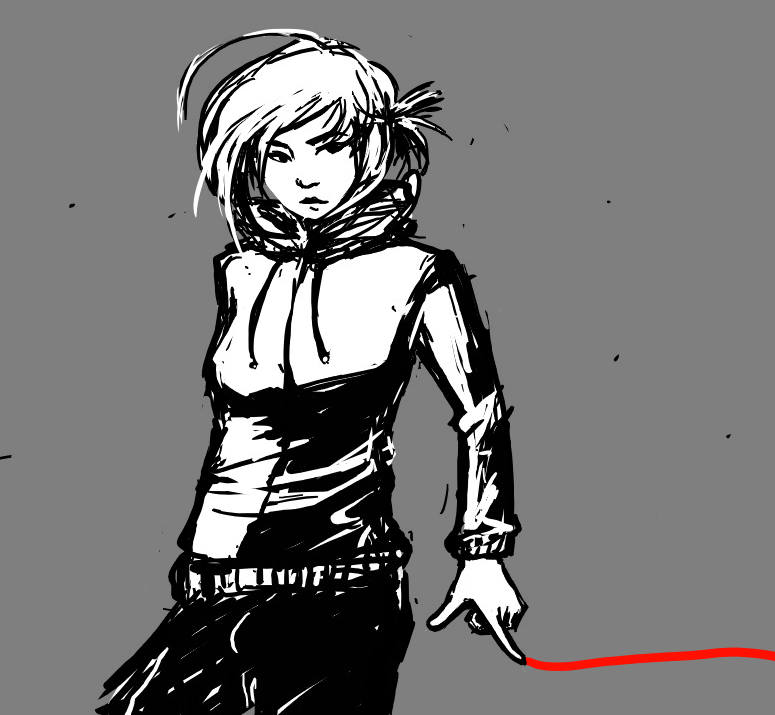
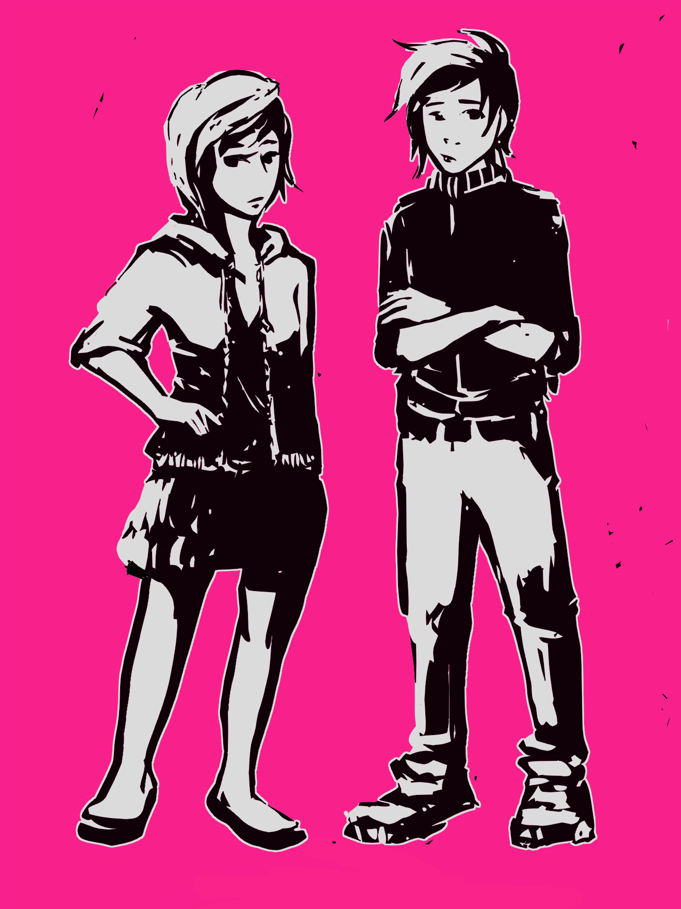
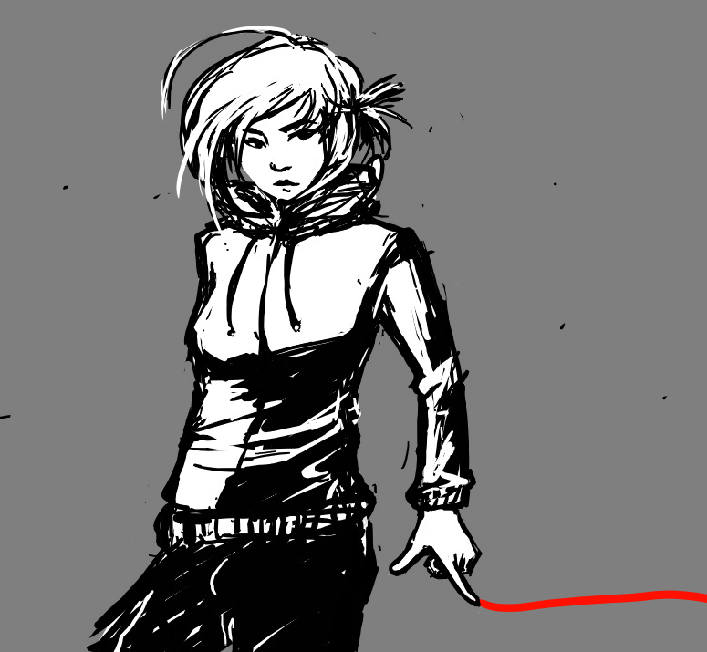
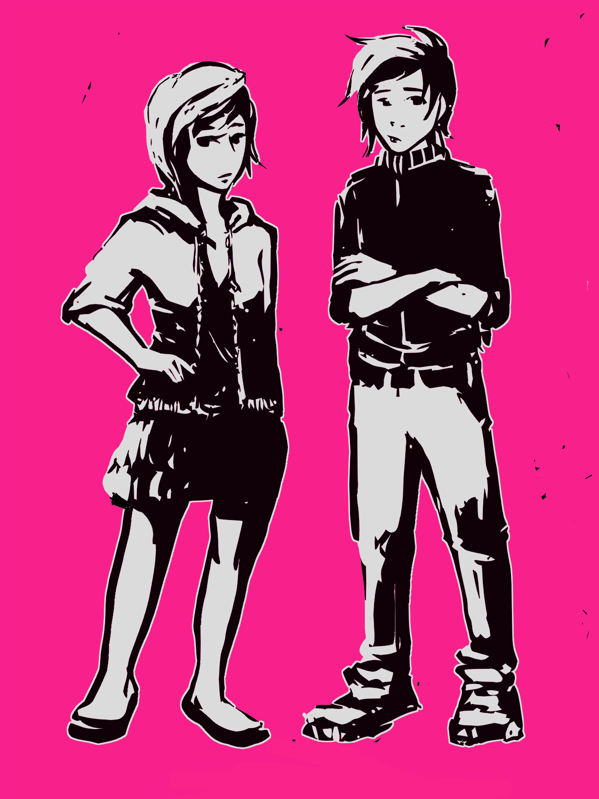

DIGITAL ILLUSTRATION
 



I have illustrating my entire life and have sketchbooks filled with drawings; below are a few of my favorite pieces.
I specialize in digital and watercolor paintings, but I'm always trying new things!

